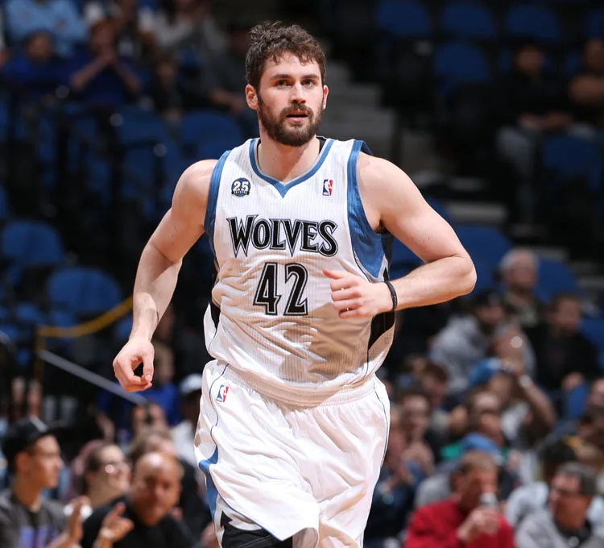

O drużynie
Minnesota Timberwolves to profesjonalna drużyna koszykarska z siedzibą w Minneapolis. Rywalizują w National Basketball Association (NBA) jako członek Dywizji Północno-Zachodniej Konferencji Zachodniej. Zespół został założony w 1989 roku.

Krótka historia klubu
Timberwolves dołączyli do NBA w 1989 roku jako drużyna rozszerzająca. Przez lata mieli swoje wzloty i upadki, a jednym z najbardziej pamiętnych okresów była era Kevina Garnetta, który poprowadził zespół do wielu występów w play-offach, w tym do finałów Konferencji Zachodniej w 2004 roku. Ogólnie drużyna z Minnesoty była Mistrzem Dywizji: 2004, Występowali w Play-Off oraz Play-In: 1997, 1998, 1999, 2000, 2001, 2002, 2003, 2004, 2018, 2022, 2023, 2024, 2025.
Obecny skład (sezon 2025/2026)
Oto Pierwsza piątka zespołu:
- Anthony Edwards
- Jaden McDaniels
- Rudy Gobert
- Julius Randle
- Donte DiVincenzo
Zawodnicy Rezerwowi:
- Joan Beringer
- Jaylen Clark
- Mike Conley
- Rob Dillingham
- Bones Hyland
- Joe Ingles
- Johnny Juzang
- Leonard Miller
- Naz Reid
- Terrence Shannon Jr.
Największe gwiazdy w historii
| Zawodnik | Pozycja | Lata w klubie |
|---|---|---|
Kevin Garnett  |
Silny skrzydłowy | 1995–2007, 2015–2016 |
| Kevin Love  | Silny skrzydłowy | 2008–2014 |
Anthony Edwards  |
Rzucający obrońca | od 2020 |